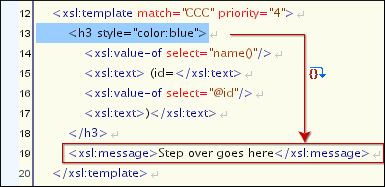

Control Toolbar
The Control toolbar contains all the actions that you need to configure and control the debugging process. The following actions are described as they appear in the toolbar from left to right.

- XML source selector
- The current selection represents the source document used as input by the
transformation engine. The selection list contains all open files (XML files being
emphasized). This option allows you to use other file types also as source documents. In
an XQuery debugging session this selection field can be set to the default value
NONE, because usually XQuery documents do not require an input source. - XSL / XQuery selector
- The current selection represents the stylesheet or XQuery document to be used by the transformation engine. The selection list contains all open files (XSLT / XQuery files being emphasized).
 Link with
editor
Link with
editor- When selected, the XML and XSLT/XQuery selectors display the names of the files open in the central editor panels. This button is toggled off by default.
- Output selector
- The selection represents the output file specified in the associated transformation
scenario. You can specify the path by using the text field, the
 Insert Editor
Variables button, or the Browse button.
Insert Editor
Variables button, or the Browse button.  Configure parameters
Configure parameters- Opens a dialog box that allows you to configure the XSLT / XQuery parameters to be used by the transformation.
- Edit extensions
- Allows you to add and remove the Java classes and JARS used as XSLT extensions.
 /
/ Turn on/off profiling
Turn on/off profiling- Enables / Disables current transformation profiling.
- Enable XHTML output
-
Enables the rendering of the output in the XHTML output view during the transformation process. For performance issues, disable XHTML output when working with very large files. Note that only XHTML conformant documents can be rendered by this view. To view the output result of other formats, such as HTML, save the Text output area to a file and use an external browser for viewing.
When starting a debug session from the Editor perspective by using the Debug Scenario action, the state of this toolbar button reflects the state of the Show as XHTML output option from the scenario.
 Turn on/off output to source
mapping
Turn on/off output to source
mapping-
Enables or disables the output to source mapping between every line of output and the instruction element / source context that generated it.
 Debugger preferences
Debugger preferences-
Quick link to Debugger preferences page.
- XSLT / XQuery engine selector
- Lists the processors available for debugging XSLT and XQuery transformations.
 XSLT / XQuery
engine advanced options
XSLT / XQuery
engine advanced options- If Saxon HE/PE/EE is selected, you can click this button to open the Advanced Saxon Transformation Options page.
 Step into
Step into
- Starts the debugging process and runs until the next instruction is encountered.
 Step over
Step over
-
Run until the current instruction and its sub-instructions are over. Usually this will advance to the next sibling instruction.
Figure 2. Step over   Step out
Step out
-
Run until the parent of the current instruction is over. Usually this will advance to the next sibling of the parent instruction.
Figure 3. Step out  Run Shift +
F5
Run Shift +
F5- Starts the debugging process. The execution of the process is paused when a breakpoint is encountered or the transformation ends.
- Run to cursor
- Starts the debugging process and runs until one of the following conditions occur: the line of cursor is reached, a valid breakpoint is reached or the execution ends.
 Run to end
Run to end
- Runs the transformation until the end, without taking into account enabled breakpoints, if any.
- Pause
- Request to pause the current transformation as soon as possible.
 Stop
Stop
- Request to stop the current transformation without completing its execution.
- Show current execution nodes
- Reveals the current debugger context showing both the current instruction and the
current node in the XML source. Possible displayed states:
- Entering (
 ) or leaving
(
) or leaving
( ) an XML execution
node.
) an XML execution
node. - Entering () or leaving
(
 ) an XSL execution
node.
) an XSL execution
node. - Entering () or
leaving (
 ) an XPath
execution node.Note: When you set a MarkLogic server as a processor, the Show current execution nodes button is named Refresh current session context from server. Click this button to refresh the information in all the views.
) an XPath
execution node.Note: When you set a MarkLogic server as a processor, the Show current execution nodes button is named Refresh current session context from server. Click this button to refresh the information in all the views.
- Entering (